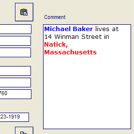

*BIN_TO_HTML()
Syntax
HTML_Text as C = *BIN_TO_HTML( RTF_Binary_Text as B )
|
Argument |
Description |
|
HTML_Text |
Formatted HTML text that corresponds to the original formatted RTF text. |
|
RTF_Binary_Text |
The contents of a RTF memo field. |
Description
The *BIN_TO_HTML() function converts binary RTF text to HTML text. The following images show the RTF text on the form and the converted HTML text in a browser.


Examples
The following example reads RTF binary text, writes it to an HTML file, and displays it in a browser.
|
dim tbl as P dim htmltext as C tbl = table.open("customer") tbl.fetch_first() htmltext = "
file.from_string("c:\foo.html",htmltext) sys_open("c:\foo.html") |
This example retrieves the HTML value of a form's commentfield, which is a RTF memo field.
|
dim tbl as P dim fld as P dim html as C tbl = table.current() fld = tbl.field_get("comment") html = *bin_to_html(fld.value_get() ) |
See Also